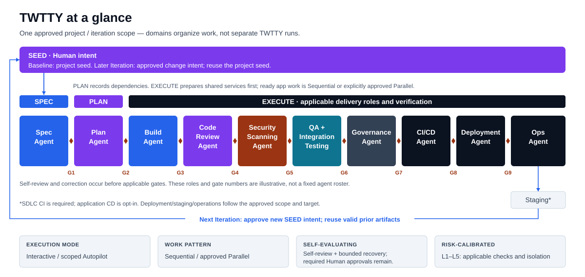

TWTTY™
Software Engineering Factory
Intent-Driven. AI-Orchestrated.
TWTTY is an intent-driven agentic engineering framework built for teams developing production-grade applications. It inverts responsibility for orchestrating AI—from humans to AI. You describe what you want to build, and AI plans, builds and tests the app, then deploys it when approved. Your team retains control over scope, approvals and consequential decisions.
- Your partSEEDSet your intent
- AI-ledSPECRequirements
- AI-ledPLANWork, risks & gates
- AI-ledEXECUTEDeliver & verify
- Scale your agentic software delivery through a governed, repeatable, and configurable engineering process.
- Empower your teams to build production-ready applications with security by design, quality assurance, and governance controls aligned with your business requirements.
What can you build?
Choose the project type that matches your work:
- Software developmentApplications, services, APIs, CLIs, and libraries.Explore Software Workflow
- Agentic AI applicationsLLM-driven applications and agents with evaluation, safety, and cost controls.Explore AI App Workflow
- Data engineeringBatch and streaming data pipelines, with data-quality, contract, freshness, and lineage controls.Explore Data Engineering Context
- Reverse EngineeringRead-only investigation of existing systems to produce evidence-backed documentation and findings.Explore Reverse Engineering Workflow
TWTTY is an extensible framework. New specializations can be added for other engineering disciplines and workflows, building on the same core methodology.
Rigor that scales with risk
The SDLC risk ladder defines L1-L5.
| Level | Intended use |
|---|---|
| L1 | Prototype or experiment; non-production. |
| L2 | Internal workflow with a low blast radius. |
| L3 | Team-facing deliverable with moderate stakes. |
| L4 | Customer-facing or revenue-impacting work. |
| L5 | Regulated, safety-critical, or mission-critical work. |
Levels change the required verification, security, and review controls, not who owns the intent. L1 does not waive required privacy or approval controls. Autopilot is a separate, explicitly authorized execution choice.
Reverse engineering uses its own three assessment-depth levels: 1 — Orientation snapshot, 2 — Contributor-ready assessment (default), and 3 — High-consequence assessment. These are not equivalent to the SDLC risk levels. Explore assessment-to-implementation handover.
Why TWTTY?
Intent-led. Whole-system. Human-controlled.
See the whole solution.
Not just the next piece of code.
Tell TWTTY what you want to achieve and what done looks like. AI connects the experience, architecture, APIs, data and infrastructure into a coherent delivery plan, with security, quality, governance, cost and operations considered throughout. It then guides approved implementation and verification against those outcomes.
See the whole solution
- Intent-led engineering.Without the prompt-engineering burden.
- End-to-end SDLC.From discovery to deployment and operations.
- Whole-system architecture and design.UI, APIs, data and infrastructure, connected by requirements, contracts and real dependencies.
- Experience the design before implementation.Professional wireframes and high-fidelity, runnable prototypes with working user flows.
- APIs as consumer contracts.Versioning, compatibility and deliberate breaking-change policies.
- Specializations beyond code generation.Software, AI apps, data engineering and evidence-backed, read-only reverse engineering.
Deliver with confidence
- Built-in governance.Human authority, explicit approvals and organizational policies.
- Risk-matched rigor.SDLC L1-L5: applicable reviews, scans, tests and gate evidence.
- AI evaluations. Data quality.Real-service smoke at L1; formal verification at higher levels or when explicitly selected/required.
- Prompt execution logs.Approved prompts and outcomes in append-only, version-controlled history.
- Models and budgets by choice.Model/escalation policies and separate budgets for building and running AI applications.
- Bounded recovery.Retry, refine or escalate explicitly, rather than silently weaken the goal.
Scale with your team
- Your stack. Your standards.Your control, with interactive decisions or explicitly scoped delegation.
- Project-owned configuration.Approved overrides, reusable settings and deliberate refresh without losing customizations.
- Repeatable engineering.Carry approved recipes, verification practices and recorded decisions across developers and iterations.
- Agents, skills and tools.Assembled on demand through pluggable harness and development-platform bindings.
- Built for team development.Coordinate parallel work through domains, work claims, isolated worktrees and planned integration.
- Iterative development.Evolve without starting over.
- Reusable project skills.Capture useful expertise. Less reinvention.
- Continuity across sessions.Recover scope and responsibility, then continue only assigned work or a separately approved handover.
Explore the capabilities behind the benefits: configuration choices, provider profiles, evaluation requirements and engineering controls.
Configuration capabilities Rigor and approvalsCapabilities depend on the active specialization and selected tools. Required controls, permissions and approvals still apply.
TWTTY at a glance
One lifecycle per project or Iteration. SPEC identifies domains. PLAN groups work, records real dependencies and plans integration. Sequential is the default. Inside EXECUTE, prepare shared infrastructure and application connection settings before creating app-worker branches; only explicitly authorized Parallel runs independent, ready groups concurrently.

Open full-size diagramHow delivery works
SEED → SPEC → PLAN → EXECUTE
Intent → Requirements → Work design → Build and verify
Discovery defines the work. Resolve requirements and configuration, then draft and check the specification. PLAN develops architecture, design and orchestration. Explore the Discovery Interview.
Four commands, distinct purposes. Start project establishes the first baseline for new software or an approved existing-code goal, without resetting an existing TWTTY lifecycle. Resume recovers state and responsibility, then offers the permitted action; finding unclaimed work requires an explicit request. Start iteration adds approved intent after verified initial baseline completion. Handoff exports an approved scope without starting another lifecycle; it is unsupported for read-only assessment.
Inside EXECUTE: set up the development environment, develop and verify locally, then build and deploy if approved. The local edit/build/test/run cycle is the inner loop. Continuous integration (CI) runs required build and verification checks; approved continuous delivery/deployment (CD) workflows manage cloud releases. A local app can still use an approved cloud model without cloud app hosting. Containers and formal test/evaluation suites apply only where the approved scope, risk level or policy requires them.
Hand off to another team or customer
A teammate clones the repository and uses twtty resume. TWTTY recovers responsibility and offers the permitted action. Selected setup/run restores only missing prerequisites and verifies the actual app using that Human's own access; it does not claim another person's work or create a baseline.
Use twtty handoff to prepare a project for another team or customer. Confirm source/history, destination and access, then verify the private repository and matching ZIP. Include applicable source, locks, packaging/Compose/IaC definitions, recipes and licenses, plus the complete approved project-owned config/record scope. Reference the current separate framework, not a bundled snapshot. Sanitize export copies only; leave source unchanged.
Where containers apply, recipients build their own images from source and verify any custom Dockerfile. They need no sender images, credentials, caches or data. Resume uses their own identity and authorization; it transfers no claim or Autopilot grant. Independent CI/cloud bindings require their own owner approval.
Explore Handoff · Handoff requirements · Recipient onboarding.
Authority, collaboration and continuity
- You control scope and approvals. Interactive mode is the default. Scoped Autopilot can be authorized after
SEED-EXIT; it does not waive safeguards. - Plans support team collaboration. Work is organized by domain, real dependencies, safe concurrency, and integration requirements—not hard-coded developers.
- Work is traceable. Append-only replay logs record prompts, outcomes, approvals and artifact paths. Single-domain Sequential work may reuse the authorized direct context where policy permits; domain/worker isolation and required publication PR/CI/review controls still apply.
- Rigor matches risk. L1 is a prototype or experiment, not approval for real users or production. Shared team deliverables generally need L2 or L3 controls.
New projects normally place process artifacts under the product's twtty/ folder: seed/, spec/, plan/, replay-execution/ and twtty-runtime-config/. Preserve an existing adopted artifact root/layout. Application code, tests, infrastructure and CI stay in their normal locations. Replay evidence is authoritative; state.md is derived. Every invocation reads the complete applicable framework; adopted project configuration changes only through approved reconciliation, never an age-driven refresh.
Technical reference
- Configuration capabilities and project-owned settings
- Full Life Cycle reference
- Shared guide entry point
- Starting prompts and entry points
- Four stages and approvals
- Implementation and verification
- Design and work-item planning
- Authoritative team collaboration rules
- Risk and approvals
Responsible use and production readiness
Before production use, applications built or modified with TWTTY must meet the testing, security, privacy and release requirements appropriate to their intended use and risk. For AI applications, this includes applicable AI safety and responsible AI evaluations, including jailbreak and prompt-injection testing where relevant. Users remain responsible for validating, deploying and operating their applications.
Users should validate outcomes and apply appropriate controls for permissions, sensitive information, deployments, destructive operations, and third-party costs.
Attribution and license
Copyright 2026 Ajai Peddapanga. First-party code, configuration, templates, documentation, methodology and artwork are offered under Apache License 2.0. See AUTHORS, NOTICE and branding information.
TWTTY is provided "AS IS", without warranties, subject to the warranty disclaimers and liability limitations in the Apache License 2.0.
AI-generated outputs may be incorrect, incomplete or unsafe; validate results before use. TWTTY does not guarantee accuracy, security, regulatory compliance or production suitability.
TWTTY is not officially sponsored or endorsed by Microsoft. Beta availability does not imply production readiness or enterprise certification.